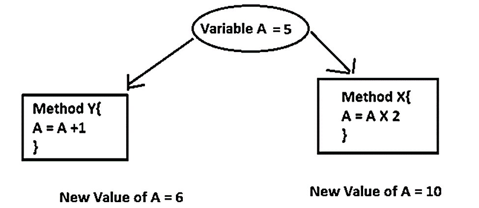

Race Conditions
Two or more threads may race (= compete with) each other if they attempt to change data at the same moment.
A race condition is a situation where the unsynchronized access of a shared resource by two or more threads leads to erroneous program behavior and corrupt data.
The shared resource could be anything the OS has to offer:
- Hardware (e.g., CPU, Memory, Disc Space, I/O devices, etc.)
- Data in memory: this is the most common form of a race, called a data race.
The part of the code where a race occurs is called a critical region.
We can prevent races by synchronizing threads' access (= arranging an orderly and timed access) to critical regions.

Example of a race condition. Taken from this blog.
 These notes by Miriam Briskman are licensed under CC BY-NC 4.0 and based on sources.
These notes by Miriam Briskman are licensed under CC BY-NC 4.0 and based on sources.